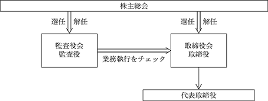

（注）株式譲渡制限に関する規定は次の通りです。
当社の発行する全部の株式について、会社法第107条第1項第1号に定める内容（いわゆる譲渡制限)を定めており、当該株式の譲渡又は取得について取締役会の承認を要する旨を定款第8条において定めております。
該当事項はありません。
該当事項はありません。
③ 【その他の新株予約権等の状況】
該当事項はありません。
該当事項はありません。
(注1) 会社法第447条第１項の規定に基づき、資本金を減少しその他資本剰余へ振り替えたものであります。
令和５年12月31日現在
令和５年12月31日現在
浜松市においては、令和6年1月1日に行政区再編が行われており、上表には当該再編後の住所を記載しております。
令和５年12月31日現在
該当事項はありません。
(8)【役員・従業員株式所有制度の内容】
該当事項はありません。
該当事項はありません。
該当事項はありません。
該当事項はありません。
該当事項はありません。
当社は、所有株式２株を単位として、株主を浜名湖カントリークラブの会員としております。このような株式の性格及び事業の性質上、原則として、配当による利益還元は行っておりません。
内部留保資金の使途につきましては、今後の事業展開への備えとしていくこととしております。
① コーポレート・ガバナンスに関する基本的な考え方
当社は、法令の遵守に基づく企業倫理の重要性を認識するとともに、より透明性の高い、公正な経営を実現することを重要課題であると考えております。また、株主の皆様へは、迅速かつ正確な情報公開により、経営の透明性を高めてまいります。
② 企業統治の体制の概要及び当該体制を採用する理由
当社の機関としては取締役会を中心に運営されており、監査役が取締役の業務執行について適法性ならびに法令遵守をチェックする体制を採っております。なお当社は監査役会制度を採用しています。
・会社の機関と内部統制の関係

取締役会は年間5回以上開催され、取締役全員が、営業政策ならびにコース管理政策を検討し、事業環境の変化に対応した有効な政策を打ち出すと共に、当社を取り巻くリスクに備えるため状況の把握、対応の適否を検討しております。監査役4名は何れも社外監査役であり、取締役の業務の執行について違法性はないか、法令遵守に欠けるところはないかに留意しております。
なお、令和5年12月31日現在、会社役員は取締役5名（うち社外取締役4名）、監査役4名（うち社外監査役4名）となっております。なお、監査役のうち1名は、長年にわたり経理監査業務の経験を重ねてきており、財務及び会計に関する相当程度の知見を有しております。
なお、当社は、役員及び従業員の人数が少なく内部監査の担当部門はありませんが、業務の相互チェック機能を有しております。
・業務の適正化を確保するための体制の整備に関する事項
（イ）取締役の職務の執行が法令及び定款に適合することを確保するための体制
a 取締役は、「取締役会規程」、「協議規則」その他の社内規程に則り職務を執行する。また取締役会等において、相互に職務執行を監督する。
b 監査役は、監査役会が定める監査の方針に従い、内部統制の有効性を定期的に検証する。
（ロ）取締役の職務の執行に係る情報の保存及び管理に関する体制
取締役の意思決定及び職務執行に係る情報その他重要情報の保存及び管理は総務課を主管部門とし、必要に応じて閲覧可能な状態を維持する。
（ハ）リスク管理体制の整備状況
リスク管理部門として、総務課がリスク管理活動を統括し、規程の整備とその運用を図る。取締役会において
当社を取り巻くリスクに備えるための状況把握、対応等の適否を検討している。また、高度な判断を必要とされ
るリスクが予見・発見された場合には必要に応じて弁護士、監査公認会計士、社会保険労務士等の外部専門家の
助言を受ける体制を構築している。
（ニ）取締役の職務の執行が効率的に行われることを確保するための体制
a 組織編成を適宜見直し、責任を明確にするとともに関連部門間の連携強化を図り、効果的な職務執行体制を構築する。
b 取締役の職務の執行が効率的に行われるための体制の基礎として、取締役会を必要に応じて随時開催し、また、経営執行に伴う重要な経営戦略について戦略策定の審議のために必要に応じて各課長出席の臨時取締役会を開催する。
（ホ）従業員の職務執行が法令・定款に適合することを確保するための体制
a 従業員の具体的な職務の執行手続を定めた「業務分掌規程」、「協議規則」、「個人情報保護規程」その他社内規程を周知徹底し、必要に応じて改定する。
b 従業員のコンプライアンス意識を高揚させるため、各種の研修、社外セミナー等を通じ従業員に対するコンプライアンス教育を実施する。
（へ）監査役がその職務を補助すべき使用人を置くことを求めた場合における当該使用人に関する体制
監査役の職務を補助する組織を総務課とする。
（ト）上記（へ）の使用人の取締役からの独立性に関する事項及び当該使用人に対する指示の実行性の確保に関す る事項
a 監査役の職務を補助する者は、その職務に関しては監査役の指揮命令に従い、取締役からの独立性を確保する。
b 人事異動、組織変更等については、監査役の意見を尊重するものとする。
（チ）取締役及び使用人が監査役に報告するための体制その他監査役への報告に関する体制、報告したことを理由として不利な取扱いを受けないことを確保するための体制
年次決算書、その他重要事項を監査役に報告する他、監査役が求める資料を提供する。なお、監査役への報告、資料提供を理由とする不利益処分その他の不利な取扱いを禁止する。
（リ）その他監査役の監査が実効的に行われることを確保するための体制
a 監査役は、代表取締役、監査公認会計士とそれぞれ随時に意見交換会を開催する。
b 監査役がその職務の執行について必要な費用の前払い等の請求をしたときは、速やかに当該費用又は債務を処理する。
（ヌ）反社会的勢力排除に向けた体制
暴力団の反社会的活動、暴力、不当な要求をする人物及び団体に関しては、毅然とした態度で臨み、一切の関係を遮断する。
万一、反社会的勢力が攻撃してきた場合にも、これに屈せず断固として拒否し、顧問弁護士や警察等とも連携し、的確に対応する。
③ 企業統治に関するその他の事項
（イ）取締役の定数
当社の取締役は15名以内とする旨定款に定めてあります。
（ロ）取締役選任の決議要件
当社は、取締役の選任決議について、議決権を行使することができる株主の議決権の3分の1以上を有する株主が出席し、その議決権の過半数の決議によって選任する旨、また、累積投票によらないものとする旨を定款に定めております。
（ハ）株主総会決議に関する事項
当社は、株主総会の円滑な運営を行うことを目的として、会社法第309条第2項に定める株主総会の特別決議要件について、議決権を行使することができる株主の議決権の3分の1以上を有する株主が出席し、出席した当該株主の議決権の3分の2以上をもって行う旨定款に定めております。
（ニ）役員等賠償責任保険契約
当社は会社法第430条の3第1項に規定する役員等賠償責任保険契約を保険会社との間で締結し、被保険者が会社の役員としての業務につき行った行為（不作為を含む）に起因して損害賠償請求がなされたことにより被保険者が被る損害賠償金や争訟費用等を、当該保険契約により填補することとしております。保険料は全額当社が負担しております。なお。増収賄などの犯罪行為や意図的に違法行為を行った役員自身の損害等は補償対象外とすることにより、役員等の職務の執行の適正性が損なわれないように措置を講じております。
（ホ） 役員報酬等
a 提出会社の役員区分ごとの報酬等の総額、報酬等の種類別の総額及び対象となる役員の員数
b 役員報酬等の額又は算定方法の決定に関する方針の内容及び決定方法
当社の役員報酬等の額については、株主総会の決議により報酬総額の最高限度額を決定し、各取締役の報酬額については取締役会の決議、各監査役の報酬額については監査役の協議により決定しております。
④ 取締役会の活動状況
当事業年度において当社は取締役会を6回開催しており、個々の取締役の出席状況については次のとおりであります。
取締役会における具体的な検討内容として、営業の基本方針、収支・事業計画、中期経営計画、設備投資計画のほか、 従業員処遇の改定などがあります。
①役員一覧
男性9名 女性-名 （役員のうち女性の比率-％）
(注) １．取締役 所 洋史、豊田泰輔、石川雅洋、橋本隆康は社外取締役であります。
２．監査役 坂本 洋、山口信仁、山口 進、秋山式広は、社外監査役であります。
３．令和6年3月16日就任後、1年内の最終の決算期に関する定時株主総会の終結まで。
４．令和6年3月16日就任後、4年内の最終の決算期に関する定時株主総会の終結まで。
５．令和5年3月18日就任後、4年内の最終の決算期に関する定時株主総会の終結まで。
② 社外取締役及び社外監査役
会社と会社の社外取締役及び社外監査役との人的関係、資本的関係または取引関係その他利害関係の概要
社外取締役である所 洋史、豊田泰輔、石川雅洋及び橋本隆康と当社との間に特別な利害関係はありません。また、社外監査役である坂本 洋、山口信仁、山口 進及び秋山式広との間に特別な利害関係はありません。
(3) 【監査の状況】
① 監査役監査の状況
監査役は常勤監査役1名、非常勤の社外監査役3名から構成され、監査役会が定めた監査役監査基準に則
り、取締役業務執行の適法性、妥当性に関して公正・客観的な立場から監査を行っております。また、取
締役会には原則として監査役全員が出席し、重要な決裁書類の閲覧、関係者からの報告聴取などにより、
取締役の業務執行状況を充分に監査できる体制となっております。なお、常勤監査役坂本洋氏は経理監査
業務の経験を重ねてきており、財務及び会計に関する相当程度の知見を有しております。
代表取締役及び監査公認会計士とは、必要の都度相互の情報交換・意見交換を行うなど連携を密にして、
監査業務の実行性と効率性の向上を目指しております。
当事業年度において当社は監査役会を3回開催しており、その出席状況は以下のとおりです。
監査役会における検討事項としては、監査方針、監査計画などがあり、また常勤監査役の活動状況としては取締役や総務課への定期的な聴取を行っております。
② 内部監査の状況
当社は内部監査部門を設けていないため、該当事項はありません。
③ 会計監査の状況
a.監査公認会計士の氏名
田中範雄
b.継続監査期間
21年
c.監査証明の審査体制
外部公認会計士による審査を受嘱しております。
d.監査業務に係る補助者の構成
当社の会計監査業務に係る補助者は、公認会計士3名、その他2名であります。
e.監査公認会計士の選定方針と理由
当社は田中公認会計士共同事務所内の管理体制や独立性及び専門性の有無、監査報酬等を総合的に勘案して
選定しております。
f.監査役及び監査役会による監査公認会計士の評価
当社の監査役は、監査公認会計士から監査計画、監査の実施状況及びその結果について報告を受け、その
結果、適切な監査が実施されていることを確認しております。
④ 監査報酬の内容等
当社における非監査業務はありません。
該当事項はありません。
該当事項はありません。
d.監査報酬決定の方針
監査報酬につきましては監査日数、業務の特性等を勘案し、監査人である監査公認会計士と協議の上適切に決定
しております。
(4) 【役員の報酬等】
当社は非上場の会社でありますので、記載すべき事項はありません。
なお、役員報酬の内容につきましては、「４ コーポレート・ガバナンスの状況等（１）コーポレート・ガバナンスの概要」に記載しております。
(5) 【株式の保有状況】
当社は非上場の会社でありますので、記載すべき事項はありません。